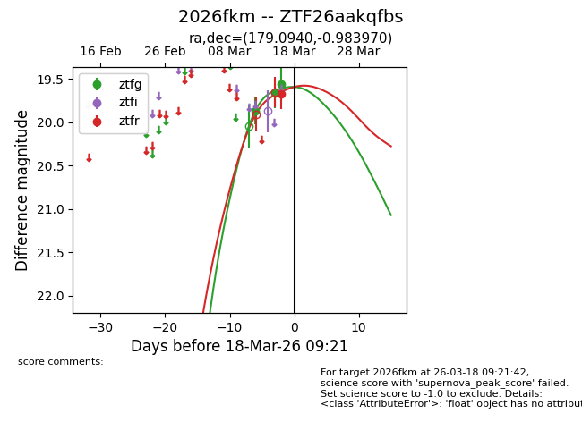
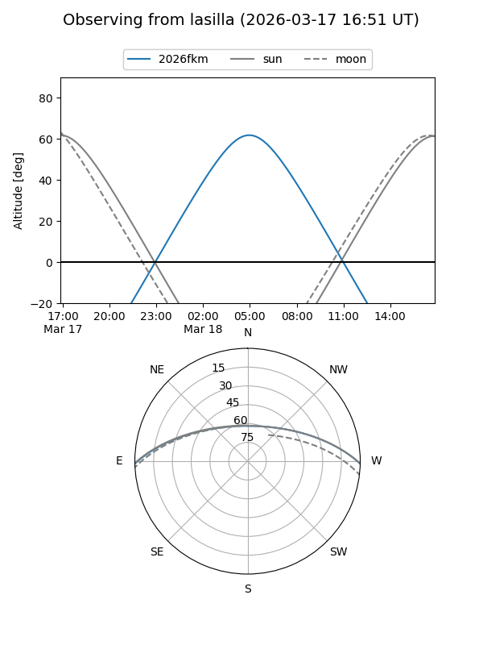
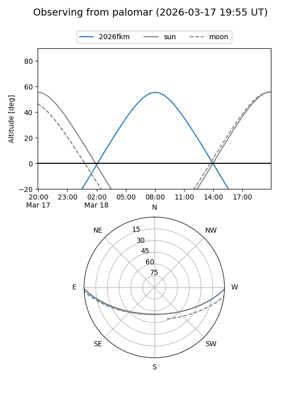
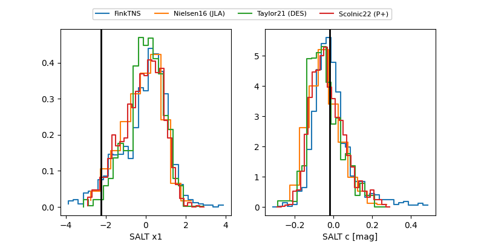

2026fkm
Target 2026fkm at 2026-03-18 09:24
Aliases and brokers:
FINK: link
Lasair: link
ALeRCE: link
TNS: link
YSE: link
alt names
ZTF26aakqfbs (ztf,fink_ztf)
2026fkm (tns,yse)
Coordinates:
equatorial (ra, dec) = 179.0940,-0.98397
equatorial (HMS+DMS) = 11:56:22.55,-00:59:02.29
galactic (l, b) = (275.4871,+58.92226)
Flags:
Photometry:
last ztfg=19.56, ztfr=19.68
3 ztfg, 1 ztfr detections
Lightcurve

Visibility


Additional plots
